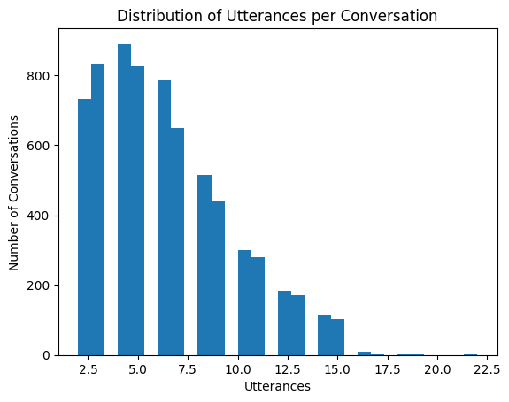
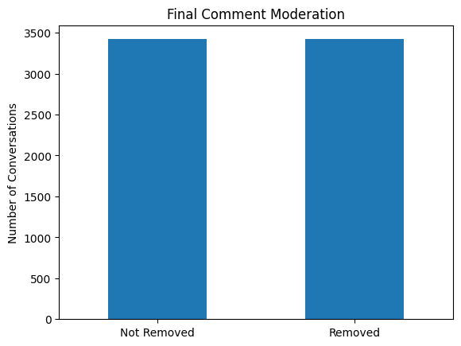
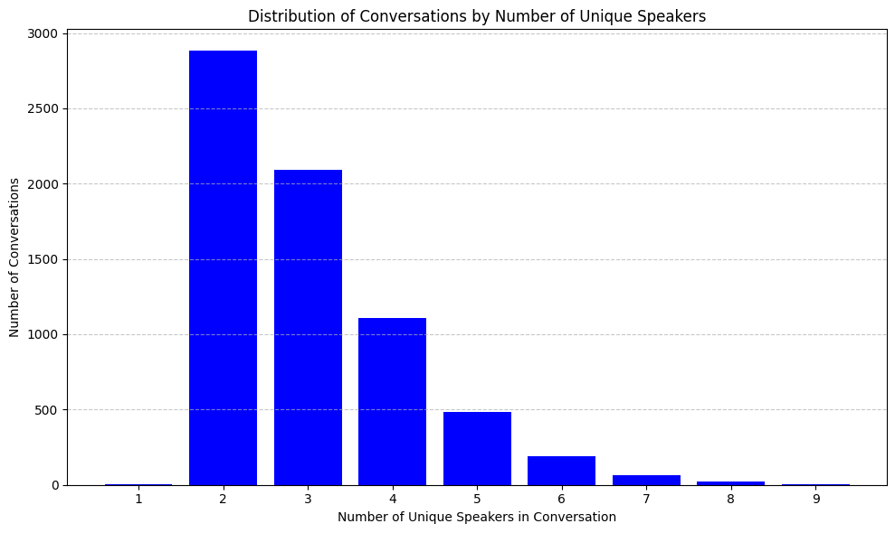
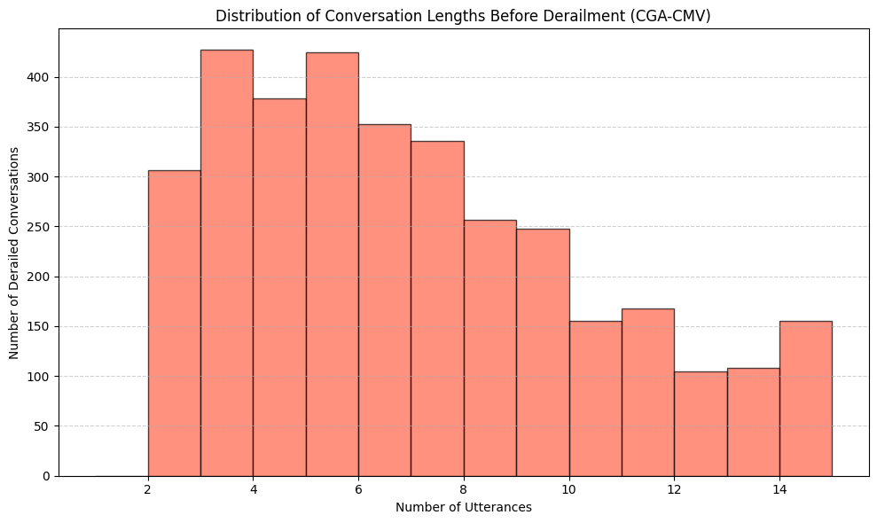

%%capture
from tqdm import tqdm
from convokit import Corpus, download
import pandas as pd
import matplotlib.pyplot as plt
import seaborn as sns
import numpy as np# Load the corpus
corpus = Corpus(filename=download("conversations-gone-awry-cmv-corpus"))
corpus = Corpus(filename=download("conversations-gone-awry-corpus"))Dataset already exists at /Users/mishkin/.convokit/saved-corpora/conversations-gone-awry-cmv-corpus
Dataset already exists at /Users/mishkin/.convokit/saved-corpora/conversations-gone-awry-corpuskodis_corp = corpus_converter.test_corp--------------------------------------------------------------------------- NameError Traceback (most recent call last) Cell In[4], line 1 ----> 1 kodis_corp = corpus_converter.test_corp NameError: name 'corpus_converter' is not defined
# Basic stats
print("Speakers:", len(list(corpus.iter_speakers())))
print("Conversations:", len(list(corpus.iter_conversations())))
print("Utterances:", len(list(corpus.iter_utterances())))
# Utterances per conversation
utterance_counts = [len(list(c.iter_utterances())) for c in corpus.iter_conversations()]
plt.hist(utterance_counts, bins=30)
plt.title("Distribution of Utterances per Conversation")
plt.xlabel("Utterances")
plt.ylabel("Number of Conversations")
plt.show()
# Conversations with removed final comments
removed = [c.meta.get("has_removed_comment", False) for c in corpus.iter_conversations()]
pd.Series(removed).value_counts().plot(kind="bar")
plt.title("Final Comment Moderation")
plt.xticks([0, 1], ["Not Removed", "Removed"], rotation=0)
plt.ylabel("Number of Conversations")
plt.show()Speakers: 9548
Conversations: 6842
Utterances: 42964

# Compute the number of utterances per conversation
conversation_lengths = [len(list(convo.iter_utterances())) for convo in corpus.iter_conversations()]
# Compute average, median, and max
average_length = np.mean(conversation_lengths)
median_length = np.median(conversation_lengths)
max_length = np.max(conversation_lengths)
# Sample a few conversation structures
sample_structures = {}
for i, convo in enumerate(corpus.iter_conversations()):
if i >= 3: break # Just look at 3 examples
utt_structure = [(utt.id, utt.reply_to) for utt in convo.iter_utterances()]
sample_structures[convo.id] = utt_structuredisplay(average_length, median_length, max_length)np.float64(6.279450453083894)np.float64(6.0)np.int64(22)# Count number of conversations by number of unique speakers
speaker_count_distribution = defaultdict(int)
for convo in corpus.iter_conversations():
speaker_ids = {utt.speaker.id for utt in convo.iter_utterances()}
speaker_count_distribution[len(speaker_ids)] += 1
# Sort for plotting
sorted_counts = dict(sorted(speaker_count_distribution.items()))
# Plot the distribution
plt.figure(figsize=(10, 6))
plt.bar(sorted_counts.keys(), sorted_counts.values(), color="blue")
plt.xlabel("Number of Unique Speakers in Conversation")
plt.ylabel("Number of Conversations")
plt.title("Distribution of Conversations by Number of Unique Speakers")
plt.xticks(list(sorted_counts.keys()))
plt.grid(axis="y", linestyle="--", alpha=0.7)
plt.tight_layout()
plt.show()
import numpy as np
# List to store lengths of derailed conversations
derailed_lengths = []
for convo in corpus.iter_conversations():
if convo.meta.get("has_removed_comment") == True:
num_utts = len(list(convo.iter_utterances()))
derailed_lengths.append(num_utts)
# Compute average length before derailment
average_derailment_length = np.mean(derailed_lengths)
# Plot histogram of lengths
plt.figure(figsize=(10, 6))
plt.hist(derailed_lengths, bins=range(1, max(derailed_lengths)+1), color="tomato", edgecolor="black", alpha=0.7)
plt.title("Distribution of Conversation Lengths Before Derailment (CGA-CMV)")
plt.xlabel("Number of Utterances")
plt.ylabel("Number of Derailed Conversations")
plt.grid(axis="y", linestyle="--", alpha=0.6)
plt.tight_layout()
plt.show()
average_derailment_length
np.float64(6.60479391990646)import matplotlib.pyplot as plt
import numpy as np
import pandas as pd
from collections import defaultdict
from convokit import Corpus, download
# Group all corpora
corpora = {
"CGA-CMV": cmv_corpus,
"CGA-WIKI": wiki_corpus,
"Test Corpus": test_corp
}
fig, axs = plt.subplots(len(corpora), 4, figsize=(20, 12))
fig.suptitle("Conversational Characteristics Across Corpora", fontsize=16)
for i, (label, corpus) in enumerate(corpora.items()):
# --- Plot 1: Distribution of Utterances per Conversation ---
utterance_counts = [len(list(c.iter_utterances())) for c in corpus.iter_conversations()]
axs[i, 0].hist(utterance_counts, bins=30, color="skyblue", edgecolor="black")
axs[i, 0].set_title(f"{label}\nUtterances per Conversation")
axs[i, 0].set_xlabel("Utterances")
axs[i, 0].set_ylabel("Conversations")
# --- Plot 2: Final Comment Moderation ---
removed = [c.meta.get("has_removed_comment", False) for c in corpus.iter_conversations()]
pd.Series(removed).value_counts().sort_index().plot(kind="bar", ax=axs[i, 1], color=["gray", "red"])
axs[i, 1].set_title(f"{label}\nFinal Comment Moderation")
axs[i, 1].set_xticks([0, 1])
axs[i, 1].set_xticklabels(["Not Removed", "Removed"])
axs[i, 1].set_ylabel("Conversations")
# --- Plot 3: Unique Speakers per Conversation ---
speaker_count_distribution = defaultdict(int)
for convo in corpus.iter_conversations():
speaker_ids = {utt.speaker.id for utt in convo.iter_utterances()}
speaker_count_distribution[len(speaker_ids)] += 1
sorted_counts = dict(sorted(speaker_count_distribution.items()))
axs[i, 2].bar(sorted_counts.keys(), sorted_counts.values(), color="blue")
axs[i, 2].set_title(f"{label}\nSpeakers per Conversation")
axs[i, 2].set_xlabel("Unique Speakers")
axs[i, 2].set_ylabel("Conversations")
# --- Plot 4: Lengths of Derailed Conversations ---
derailed_lengths = [
len(list(convo.iter_utterances()))
for convo in corpus.iter_conversations()
if convo.meta.get("has_removed_comment") == True
]
axs[i, 3].hist(
derailed_lengths,
bins=range(1, max(derailed_lengths) + 1 if derailed_lengths else 2),
color="tomato",
edgecolor="black"
)
axs[i, 3].set_title(f"{label}\nLength Before Derailment")
axs[i, 3].set_xlabel("Utterances")
axs[i, 3].set_ylabel("Derailed Conversations")
plt.tight_layout(rect=[0, 0, 1, 0.95])
plt.show()--------------------------------------------------------------------------- NameError Traceback (most recent call last) Cell In[22], line 11 5 from convokit import Corpus, download 9 # Group all corpora 10 corpora = { ---> 11 "CGA-CMV": cmv_corpus, 12 "CGA-WIKI": wiki_corpus, 13 "Test Corpus": test_corp 14 } 16 fig, axs = plt.subplots(len(corpora), 4, figsize=(20, 12)) 17 fig.suptitle("Conversational Characteristics Across Corpora", fontsize=16) NameError: name 'cmv_corpus' is not defined